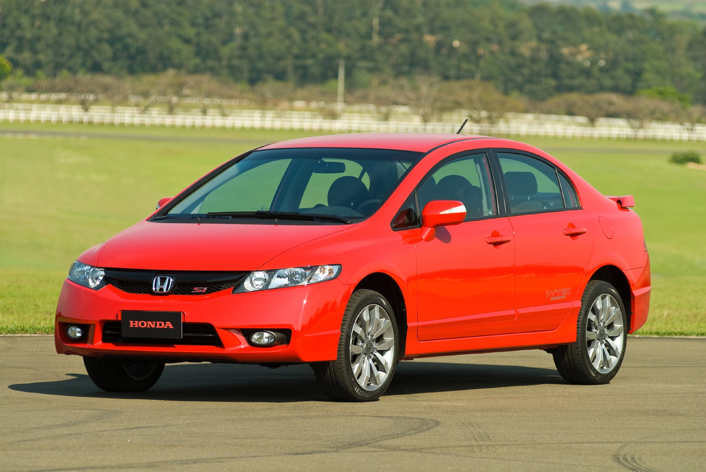

ESPORTIVO
Ficha Técnica
Ano
2007 - 2011
Motor
2.0 | 16V
Potência
192 cv
Câmbio
Manual | 6 marchas
Tração
Dianteira
Carroceria
Sedã
Combustível
Gasolina
FIPE
R$ 83.000 ~ R$ 87.000
Um sedã com coração de esportivo.
O Honda Civic Si marcou os anos 2000 com seu motor 2.0 aspirado, câmbio manual de 6 marchas e visual esportivo. Com 192 cv e o famoso motor girador, conquistou uma geração de apaixonados por desempenho e se tornou um dos esportivos nacionais mais desejados da época.